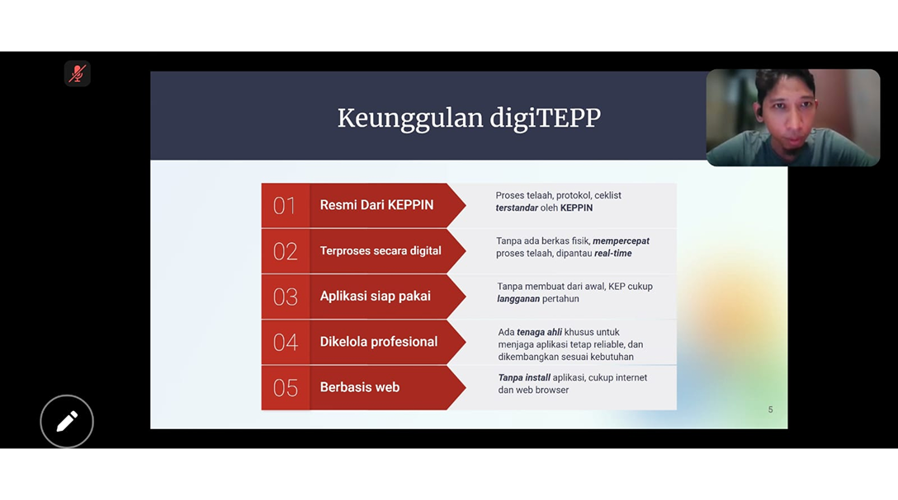

KEPPIN Selenggarakan Pelatihan Etik Dasar Lanjut, GCRP, dan Pengenalan DigiTEPP secara Online dengan Peserta dari Berbagai Institusi

Pada tanggal 28 hingga 30 November 2024, KEPPIN (Komite Etik Penelitian dan Pelayanan Indonesia) sukses menyelenggarakan Pelatihan Etik Dasar Lanjut (EDL), Good Clinical Research Protocol (GCRP), dan pengenalan aplikasi DigiTEPP secara daring. Kegiatan ini dihadiri oleh perwakilan dari berbagai institusi, termasuk Universitas Islam As-Syafiiyah Bekasi, Universitas Ichsan Satya Tangerang Selatan, Universitas Negeri Semarang, Universitas Darussalam Gontor, RSI Siti Hajar Sidoarjo, RSUD Embung Fatimah Batam, dan RSUD dr. Soedono Provinsi Jawa Timur.
Dr. Triono Soendoro, M.Sc., M.Phill., Ph.D., selaku Ketua KEPPIN, memimpin jalannya pelatihan dengan memberikan materi mendalam mengenai standar etik penelitian serta panduan pengelolaan protokol penelitian klinis yang baik. Sesi-sesi pelatihan dirancang untuk meningkatkan pemahaman peserta dalam mengelola penelitian berlandaskan etik serta memperkuat kompetensi profesional mereka di bidang ini.
Pada hari kedua, sesi malam difokuskan pada pendaftaran Komite Etik Penelitian (KEP) dari Universitas Negeri Semarang, Universitas Darussalam Gontor, RSI Siti Hajar Sidoarjo, dan RSUD dr. Soedono Provinsi Jawa Timur ke aplikasi DigiTEPP (Digitalisasi Telaah Etik Protokol Penelitian). Proses ini dipandu langsung oleh Pak Rudi, perwakilan tim pengembang dari DinusTek, yang memberikan arahan teknis untuk memastikan setiap KEP dapat menggunakan sistem secara optimal.
Hari ketiga pelatihan diisi dengan pengenalan lebih lanjut terhadap aplikasi DigiTEPP, termasuk eksplorasi fitur-fitur yang mempermudah proses telaah protokol penelitian. Dalam sesi ini, dilakukan pula simulasi telaah protokol penelitian dari RSUD dr. Soedono, Universitas Darussalam Gontor, dan RSI Siti Hajar Sidoarjo, memberikan pengalaman praktis kepada para peserta dalam mengoperasikan aplikasi secara langsung.
Melalui pelatihan ini, KEPPIN kembali menunjukkan komitmennya dalam mendukung penguatan standar etik penelitian di Indonesia dengan memanfaatkan teknologi digital. Kehadiran berbagai institusi dalam pelatihan ini mencerminkan antusiasme dan upaya bersama untuk memajukan kualitas penelitian berbasis etik di berbagai sektor pelayanan kesehatan dan pendidikan.
Sumber:
Inrernal Sekretariat KEPPIN